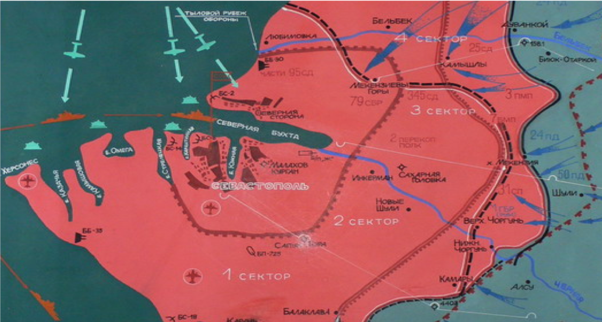
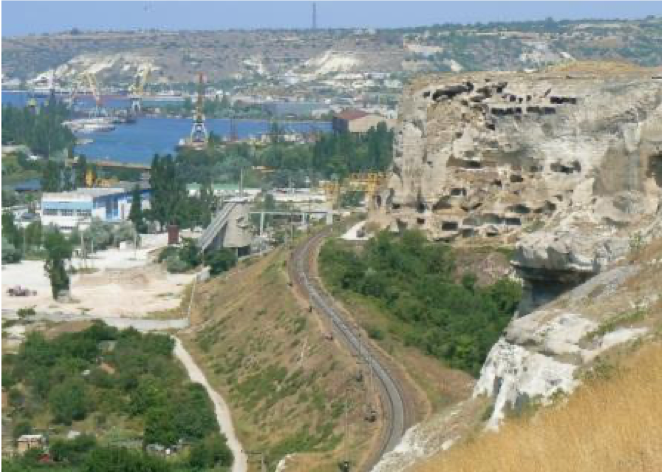
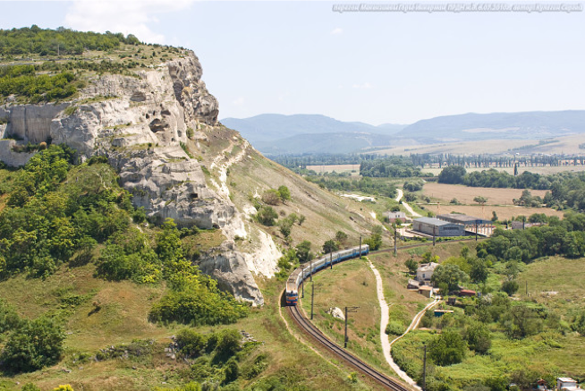

 Третий и четвертый секторы обороны включали местность от Инкерманских высот до берега моря севернее Севастополя; граница между ними проходила по Мекензиевым горам. Здесь протяженность фронта составляла 30 км. Во главе третьего сектора стояли командир 25-й Чапаевской стрелковой дивизии.


Территория Свято-Климентовского монастыря в 1941-42 вмещала в себя радиоузел ЧФ, а с мая по середину июня 1942-го - штаб 25-й дивизии. Здесь насмерть стояли защитники Севастополя - воины 25-й Чапаевской стрелковой дивизии.
Нина Онилова, пулеметчица, ценой своей жизни спасшая пару сотен раненых бойцов.
Людмила Павличенко, снайпер, убившая 309 фашистов.
Представляет собой стелу из серого гранита, установленную , на облицованный красной гранитной плиткой, парапет (из Инкерманского камня). Общая высота памятника, согласно учетной карточке 3,7 м. Вокруг по квадрату расположены семь металлических столбиков ограждения с цепью. В едином комплексе с памятником находится маленький бассейн с живыми рыбками.